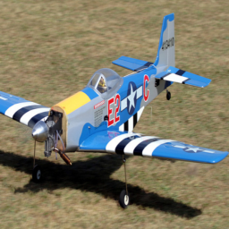
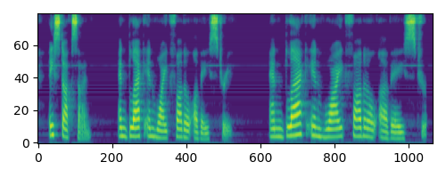
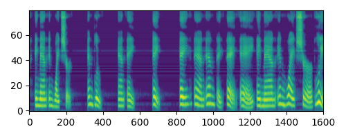
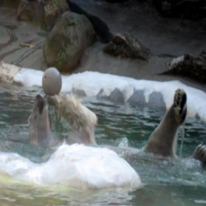

155

Text: a couple of airplanes sitting on the grass Raw:
263 32 208 5 336 100 803 256 560 873 986 72 595 872 284 614 156 341 135 769 5 336 100 803 141 250 543 975 432 96 651 538 362 911 847 89 936 181 913 1013 467 5 208 32 208 5 467 360 606 360 801 1009 398 (...truncated 90 chars)
Text: a blue air plane in an air plane Raw:
71 791 71 791 71 191 175 883 315 1011 859 927 935 623 799 839 765 69 873 866 380 220 136 289 246 309 303 721 975 655 723 165 355 133 419 793 98 104 258 317 302 478 850 385 176 214 657 718 35 713 530 9 (...truncated 346 chars)
Text: a ey city area in a city area in it Raw:
181 232 181 232 181 232 181 232 181 232 181 232 181 232 181 232 181 232 181 232 181 232 181 232 181 232 181 232 181 232 181 232 181 232 181 232 181 232 181 232 181 232 181 232 181 232 181 232 181 232 (...truncated 603 chars)
Text: Raw:
263 32 32 32 32 32 32 32 32 32 32 32 32 32 32 32 32 32 32 32 32 32 32 32 32 32 32 32 32 32 32 32 32 32 32 32 32 32 32 32 32 32 32 32 32 32 32 32 32 32 32 32 32 32 32 32 32 32 32 32 32 32 32 32 32 32 3 (...truncated 403 chars)
1686
Text: a man skiing down a snowy hill Raw:
263 32 208 5 336 717 803 337 728 971 728 141 536 113 580 66 880 938 457 765 351 160 89 936 502 706 502 110 860 58 442 42 791 1013 299 581 245 495 584 962 775 70 141 7 522 135 769 5 208 32
Text: a woman in a white and man and woman in a bow ind down a wall and down a wall and down a boy in a wall and tie Raw:
71 791 71 791 71 191 175 883 315 1011 239 307 619 557 381 623 899 699 491 698 341 39 485 775 763 330 1013 498 965 708 990 757 758 745 961 275 901 621 133 823 845 745 183 5 115 935 557 381 623 799 839 (...truncated 588 chars)
Text: a eyed in a ey on a ey Raw:
181 232 181 232 181 232 181 232 181 232 181 232 181 232 181 232 181 232 181 232 181 232 181 232 181 232 181 232 181 232 181 232 181 232 181 232 181 232 181 232 181 232 181 232 181 232 181 232 181 232 (...truncated 603 chars)
Text: Raw:
263 32 32 32 32 32 32 32 32 32 32 32 32 32 32 32 32 32 32 32 32 32 32 32 32 32 32 32 32 32 32 32 32 32 32 32 32 32 32 32 32 32 32 32 32 32 32 32 32 32 32 32 32 32 32 32 32 32 32 32 32 32 32 32 32 32 3 (...truncated 403 chars)
3233
Text: a close up of a plate with plates and eggs al Raw:
263 32 208 5 336 100 803 256 560 873 986 96 651 790 44 135 181 639 606 360 794 892 595 872 476 5 336 501 254 501 582 993 501 320 432 96 651 538 715 766 825 560 27 476 5 208 5 336 815 144 815 494 181 4 (...truncated 347 chars)
Text: a white table and a white tv Raw:
71 791 71 791 71 191 175 883 315 1011 859 927 935 381 623 799 839 863 806 698 341 843 0 913 808 750 646 208 334 143 85 805 547 831 589 827 807 179 619 713 354 436 393 12 40 618 430 489 434 531 721 975 (...truncated 590 chars)
Text: a very up of a very sign Raw:
181 232 181 232 181 232 181 232 181 232 181 232 181 232 181 232 181 232 181 232 181 232 181 232 181 232 181 232 181 232 181 232 181 232 181 232 181 232 181 232 181 232 181 232 181 232 181 232 181 232 (...truncated 603 chars)
Text: Raw:
263 32 32 32 32 32 32 32 32 32 32 32 32 32 32 32 32 32 32 32 32 32 32 32 32 32 32 32 32 32 32 32 32 32 32 32 32 32 32 32 32 32 32 32 32 32 32 32 32 32 32 32 32 32 32 32 32 32 32 32 32 32 32 32 32 32 3 (...truncated 403 chars)
4882
Text: a large piece of pizza on a plate Raw:
263 32 208 263 336 501 993 151 81 142 550 1015 293 289 873 986 873 924 351 740 639 494 501 320 986 873 924 765 27 240 360 794 110 769 5 208 32 208 5 336 501 254 1003 442 791 501 432 651 538 715 766 82 (...truncated 21 chars)
Text: a black carrot and broccoli and a broccoli and butter in a broccoli and a black carrot Raw:
71 791 71 791 71 191 175 883 315 1011 859 927 935 623 799 839 69 873 866 380 18 740 238 657 230 808 82 219 474 638 132 633 147 844 966 753 346 593 35 793 98 140 689 97 417 435 171 507 901 165 315 883 (...truncated 587 chars)
Text: a ey city area of a ey city Raw:
181 232 181 232 181 232 181 232 181 232 181 232 181 232 181 232 181 232 181 232 181 232 181 232 181 232 181 232 181 232 181 232 181 232 181 232 181 232 181 232 181 232 181 232 181 232 181 232 181 232 (...truncated 603 chars)
Text: Raw:
263 32 32 32 32 32 32 32 32 32 32 32 32 32 32 32 32 32 32 32 32 32 32 32 32 32 32 32 32 32 32 32 32 32 32 32 32 32 32 32 32 32 32 32 32 32 32 32 32 32 32 32 32 32 32 32 32 32 32 32 32 32 32 32 32 32 3 (...truncated 403 chars)
6515
Text: a parking meter on the side of the road Raw:
263 32 208 5 336 100 803 256 560 320 432 72 507 535 685 765 398 89 329 728 962 226 1009 663 816 820 230 769 5 208 32 208 5 336 501 254 1003 442 42 791 59 360 606 360 794 552 807 242 801 288 791 993 79 (...truncated 38 chars)
Text: a black parking meter in a dull and bridge Raw:
71 791 71 791 71 191 175 883 315 1011 859 927 935 623 799 839 765 69 873 380 18 740 238 657 230 82 270 269 181 682 132 633 805 227 707 931 124 526 388 497 896 928 776 481 950 402 551 1006 202 739 445 (...truncated 436 chars)
Text: a esna ey area of a ey area Raw:
181 232 181 232 181 232 181 232 181 232 181 232 181 232 181 232 181 232 181 232 181 232 181 232 181 232 181 232 181 232 181 232 181 232 181 232 181 232 181 232 181 232 181 232 181 232 181 232 181 232 (...truncated 603 chars)
Text: Raw:
263 32 32 32 32 32 32 32 32 32 32 32 32 32 32 32 32 32 32 32 32 32 32 32 32 32 32 32 32 32 32 32 32 32 32 32 32 32 32 32 32 32 32 32 32 32 32 32 32 32 32 32 32 32 32 32 32 32 32 32 32 32 32 32 32 32 3 (...truncated 403 chars)
8309
Text: a red motorcycle parked on the side of the street Raw:
263 32 208 5 336 717 803 256 803 87 12 445 564 80 654 846 48 526 81 156 993 663 816 587 639 360 794 552 807 715 39 849 176 156 341 135 769 5 208 5 320 432 72 550 507 975 535 27 476 869 254 1003 442 42 (...truncated 115 chars)
Text: a white and white and white and white and white and white Raw:
71 791 71 791 71 191 175 883 315 1011 859 927 935 623 799 839 863 806 491 698 39 214 775 672 808 750 713 646 393 828 567 85 165 315 883 175 191 71 191 175 883 315 165 901 621 133 419 990 327 268 233 3 (...truncated 580 chars)
Text: a room with a phone on the front Raw:
181 232 181 232 181 232 181 232 181 232 181 232 181 232 181 232 181 232 181 232 181 232 181 232 181 232 181 232 181 232 181 232 181 232 181 232 181 232 181 232 181 232 181 232 181 232 181 232 181 232 (...truncated 603 chars)
Text: Raw:
263 32 32 32 32 32 32 32 32 32 32 32 32 32 32 32 32 32 32 32 32 32 32 32 32 32 32 32 32 32 32 32 32 32 32 32 32 32 32 32 32 32 32 32 32 32 32 32 32 32 32 32 32 32 32 32 32 32 32 32 32 32 32 32 32 32 3 (...truncated 403 chars)
11809
Text: a man standing in a grassy field playing frisbee Raw:
263 32 208 263 336 501 791 728 971 728 141 536 113 580 66 1013 880 216 637 427 536 113 580 329 398 89 852 100 852 329 852 288 849 273 723 445 564 953 451 297 639 684 962 775 461 192 684 351 313 129 7 (...truncated 117 chars)
Text: a baseball player in the field and bat player in the air and in the air and in the air and in the air and in the air and in the air and in the air and in the air and in the air and in the air and in t (...truncated 271 chars) Raw:
71 791 71 791 71 191 175 883 315 1011 859 927 935 381 623 799 839 765 873 866 522 876 734 35 713 354 436 208 564 197 92 455 95 185 810 556 858 803 735 231 751 617 583 895 691 925 478 850 385 176 214 6 (...truncated 582 chars)
Text: a ey area of a very city area to eat Raw:
181 232 181 232 181 232 181 232 181 232 181 232 181 232 181 232 181 232 181 232 181 232 181 232 181 232 181 232 181 232 181 232 181 232 181 232 181 232 181 232 181 232 181 232 181 232 181 232 181 232 (...truncated 603 chars)
Text: Raw:
263 32 32 32 32 32 32 32 32 32 32 32 32 32 32 32 32 32 32 32 32 32 32 32 32 32 32 32 32 32 32 32 32 32 32 32 32 32 32 32 32 32 32 32 32 32 32 32 32 32 32 32 32 32 32 32 32 32 32 32 32 32 32 32 32 32 3 (...truncated 403 chars)
13471
Text: a person sitting on a bench on a beach Raw:
263 32 208 5 336 100 803 256 560 320 432 975 543 587 639 606 360 746 827 119 936 48 336 5 208 5 467 360 606 360 801 1009 398 847 89 48 869 254 1003 442 791 501 224 249 427 536 113 580 66 293 202 467 5 (...truncated 90 chars)
Text: a bench and bench and bench and bench Raw:
71 791 71 791 71 191 175 883 315 1011 859 927 935 623 799 839 765 873 866 876 958 996 329 643 253 625 785 510 964 47 641 852 46 951 573 867 819 695 48 191 71 191 175 883 315 165 901 621 133 419 990 32 (...truncated 447 chars)
Text: a ey area of a area of a area Raw:
181 232 181 232 181 232 181 232 181 232 181 232 181 232 181 232 181 232 181 232 181 232 181 232 181 232 181 232 181 232 181 232 181 232 181 232 181 232 181 232 181 232 181 232 181 232 181 232 181 232 (...truncated 603 chars)
Text: Raw:
263 32 32 32 32 32 32 32 32 32 32 32 32 32 32 32 32 32 32 32 32 32 32 32 32 32 32 32 32 32 32 32 32 32 32 32 32 32 32 32 32 32 32 32 32 32 32 32 32 32 32 32 32 32 32 32 32 32 32 32 32 32 32 32 32 32 3 (...truncated 403 chars)
15061
Text: a man flying in the water on a surfboard Raw:
263 32 208 5 336 717 803 337 728 971 728 141 536 113 580 66 192 304 538 133 807 242 911 847 89 852 791 993 151 81 831 142 174 552 663 816 820 230 769 5 208 32 208 5 336 501 254 1003 442 791 59 606 360 (...truncated 55 chars)
Text: a man on a surf board and his surf board Raw:
71 791 71 791 71 191 175 883 315 1011 859 927 935 623 799 839 995 846 121 965 22 904 864 643 253 625 683 268 233 311 779 239 601 375 441 517 735 301 451 711 350 708 421 73 924 811 666 934 282 934 75 9 (...truncated 356 chars)
Text: a eyed area of a ey area Raw:
181 232 181 232 181 232 181 232 181 232 181 232 181 232 181 232 181 232 181 232 181 232 181 232 181 232 181 232 181 232 181 232 181 232 181 232 181 232 181 232 181 232 181 232 181 232 181 232 181 232 (...truncated 603 chars)
Text: Raw:
263 32 32 32 32 32 32 32 32 32 32 32 32 32 32 32 32 32 32 32 32 32 32 32 32 32 32 32 32 32 32 32 32 32 32 32 32 32 32 32 32 32 32 32 32 32 32 32 32 32 32 32 32 32 32 32 32 32 32 32 32 32 32 32 32 32 3 (...truncated 403 chars)
16622
Text: a street sign on the side of the road Raw:
263 32 208 5 336 100 803 256 740 913 880 240 985 76 62 962 560 27 360 606 360 794 552 807 242 911 847 89 48 336 5 208 5 336 501 254 1003 442 42 791 59 360 606 360 794 552 807 242 801 288 791 993 791 8 (...truncated 35 chars)
Text: a stop sign in a black and white photo of a street Raw:
71 791 71 791 71 191 175 883 315 1011 859 927 935 623 66 76 92 934 800 574 372 752 856 91 271 326 178 262 925 227 19 973 588 934 455 924 263 225 188 182 27 990 981 205 183 311 779 119 1011 695 883 175 (...truncated 475 chars)
Text: a ey area of a very busy city area Raw:
181 232 181 232 181 232 181 232 181 232 181 232 181 232 181 232 181 232 181 232 181 232 181 232 181 232 181 232 181 232 181 232 181 232 181 232 181 232 181 232 181 232 181 232 181 232 181 232 181 232 (...truncated 603 chars)
Text: Raw:
263 32 32 32 32 32 32 32 32 32 32 32 32 32 32 32 32 32 32 32 32 32 32 32 32 32 32 32 32 32 32 32 32 32 32 32 32 32 32 32 32 32 32 32 32 32 32 32 32 32 32 32 32 32 32 32 32 32 32 32 32 32 32 32 32 32 3 (...truncated 403 chars)
18302
Text: a man standing on a tennis court playing tennis Raw:
263 32 208 263 336 501 791 728 971 728 141 536 113 580 66 880 216 637 427 536 113 580 329 398 852 254 1003 442 852 417 272 480 1003 442 852 913 938 457 986 96 538 228 622 820 476 320 432 651 133 715 9 (...truncated 68 chars)
Text: a woman is in mid air on a tennis court in mid air on a tennis court Raw:
71 791 71 791 71 191 175 883 315 1011 859 927 935 623 799 839 863 806 698 341 39 485 286 1013 498 965 708 823 845 183 311 779 119 1011 695 883 175 191 71 191 175 883 315 165 901 621 133 927 33 459 637 (...truncated 439 chars)
Text: a area of a area of a area Raw:
181 232 181 232 181 232 181 232 181 232 181 232 181 232 181 232 181 232 181 232 181 232 181 232 181 232 181 232 181 232 181 232 181 232 181 232 181 232 181 232 181 232 181 232 181 232 181 232 181 232 (...truncated 603 chars)
Text: Raw:
263 32 32 32 32 32 32 32 32 32 32 32 32 32 32 32 32 32 32 32 32 32 32 32 32 32 32 32 32 32 32 32 32 32 32 32 32 32 32 32 32 32 32 32 32 32 32 32 32 32 32 32 32 32 32 32 32 32 32 32 32 32 32 32 32 32 3 (...truncated 403 chars)
19877
Text: a large crowd of people on the water Raw:
263 32 208 263 336 501 993 151 157 81 142 550 1015 16 293 289 873 986 96 703 556 860 689 522 454 654 846 336 5 208 5 336 501 254 352 769 476 320 873 765 924 765 284 614 156 341 135 769 5 208 32 208 5 (...truncated 76 chars)
Text: a large boat and boats in the water Raw:
71 791 71 791 71 191 175 883 315 1011 859 927 935 381 623 799 699 221 559 449 231 907 982 170 288 650 97 997 591 742 47 184 571 69 873 866 826 556 738 724 1010 664 54 1004 804 418 539 471 573 405 819 (...truncated 302 chars)
Text: a giraffe is on a street Raw:
181 232 181 232 181 232 181 232 181 232 181 232 181 232 181 232 181 232 181 232 181 232 181 232 181 232 181 232 181 232 181 232 181 232 181 232 181 232 181 232 181 232 181 232 181 232 181 232 181 232 (...truncated 603 chars)
Text: Raw:
263 32 32 32 32 32 32 32 32 32 32 32 32 32 32 32 32 32 32 32 32 32 32 32 32 32 32 32 32 32 32 32 32 32 32 32 32 32 32 32 32 32 32 32 32 32 32 32 32 32 32 32 32 32 32 32 32 32 32 32 32 32 32 32 32 32 3 (...truncated 403 chars)
21549
Text: a kitchen with a stove an a kitchen Raw:
263 32 208 5 336 100 803 256 560 873 821 112 916 66 119 936 48 336 5 336 815 144 815 717 467 1013 880 216 637 489 522 135 467 1013 467 5 208 32 208 5 336 100 746 827 119 936 48 336 5 208 5 336 100 803 (...truncated 52 chars)
Text: a white plane in a dispaced a white plate of blueberry Raw:
71 791 71 791 71 191 175 883 315 1011 859 927 935 623 799 839 863 806 698 341 843 0 913 808 750 646 208 334 143 163 227 707 931 916 875 818 176 214 913 808 750 904 460 444 186 205 183 311 779 119 1011 (...truncated 580 chars)
Text: a edge of a small in a city next to ea city Raw:
181 232 181 232 181 232 181 232 181 232 181 232 181 232 181 232 181 232 181 232 181 232 181 232 181 232 181 232 181 232 181 232 181 232 181 232 181 232 181 232 181 232 181 232 181 232 181 232 181 232 (...truncated 603 chars)
Text: Raw:
263 32 32 32 32 32 32 32 32 32 32 32 32 32 32 32 32 32 32 32 32 32 32 32 32 32 32 32 32 32 32 32 32 32 32 32 32 32 32 32 32 32 32 32 32 32 32 32 32 32 32 32 32 32 32 32 32 32 32 32 32 32 32 32 32 32 3 (...truncated 403 chars)
23024
Text: a dog on the sidewalk with a frisbee Raw:
263 32 208 5 336 100 803 362 256 502 706 489 277 174 277 352 654 846 336 5 208 32 208 5 336 501 254 1003 442 42 791 59 360 606 360 552 807 715 362 81 831 142 327 595 30 535 27 476 5 208 5 336 815 144 (...truncated 80 chars)
Text: a dog in disc and blue board a basket is a dog Raw:
71 791 71 791 71 191 175 883 315 1011 859 927 935 381 623 799 839 462 476 606 837 737 670 988 428 735 231 615 879 190 856 281 813 571 1011 695 883 175 191 71 191 175 883 315 165 901 621 133 419 990 32 (...truncated 584 chars)
Text: a esty to be eaten with it to be eat to eat Raw:
181 232 181 232 181 232 181 232 181 232 181 232 181 232 181 232 181 232 181 232 181 232 181 232 181 232 181 232 181 232 181 232 181 232 181 232 181 232 181 232 181 232 181 232 181 232 181 232 181 232 (...truncated 603 chars)
Text: Raw:
263 32 32 32 32 32 32 32 32 32 32 32 32 32 32 32 32 32 32 32 32 32 32 32 32 32 32 32 32 32 32 32 32 32 32 32 32 32 32 32 32 32 32 32 32 32 32 32 32 32 32 32 32 32 32 32 32 32 32 32 32 32 32 32 32 32 3 (...truncated 403 chars)
24752
Text: a bus parked on the side of a street Raw:
263 32 208 5 336 100 803 362 825 560 176 414 284 790 174 451 297 913 1013 467 5 476 320 432 72 550 507 975 535 27 476 5 336 501 254 1003 442 42 791 59 360 606 360 794 552 807 242 801 288 791 582 791 1 (...truncated 46 chars)
Text: a bus and white bus and bus and a blue and white on a bus Raw:
71 791 71 791 71 191 175 883 315 1011 859 927 935 623 799 839 69 873 866 380 556 775 301 188 182 842 821 92 934 666 862 957 95 7 151 1007 175 191 71 791 71 191 175 883 1011 239 859 307 823 107 311 43 (...truncated 325 chars)
Text: a eye exhibit in a ey area in a eerie Raw:
181 232 181 232 181 232 181 232 181 232 181 232 181 232 181 232 181 232 181 232 181 232 181 232 181 232 181 232 181 232 181 232 181 232 181 232 181 232 181 232 181 232 181 232 181 232 181 232 181 232 (...truncated 603 chars)
Text: Raw:
263 32 32 32 32 32 32 32 32 32 32 32 32 32 32 32 32 32 32 32 32 32 32 32 32 32 32 32 32 32 32 32 32 32 32 32 32 32 32 32 32 32 32 32 32 32 32 32 32 32 32 32 32 32 32 32 32 32 32 32 32 32 32 32 32 32 3 (...truncated 403 chars)
26030
Text: a couple of cows standing in the grass Raw:
263 32 208 5 336 100 803 256 560 873 986 873 595 872 284 614 156 341 135 769 476 320 873 70 480 860 689 522 135 181 913 1013 467 5 208 5 467 1013 880 216 637 427 141 536 113 580 502 1009 160 847 89 48 (...truncated 78 chars)
Text: a cows and black cows and there is a towel in black and their a talls Raw:
71 791 71 791 71 191 175 883 315 1011 859 927 935 381 667 1005 143 567 783 844 966 753 553 891 181 219 596 58 340 670 702 610 595 849 721 993 851 105 455 862 957 95 7 151 1007 175 191 71 791 71 191 17 (...truncated 590 chars)
Text: a eyed area of a ey area Raw:
181 232 181 232 181 232 181 232 181 232 181 232 181 232 181 232 181 232 181 232 181 232 181 232 181 232 181 232 181 232 181 232 181 232 181 232 181 232 181 232 181 232 181 232 181 232 181 232 181 232 (...truncated 603 chars)
Text: Raw:
263 32 32 32 32 32 32 32 32 32 32 32 32 32 32 32 32 32 32 32 32 32 32 32 32 32 32 32 32 32 32 32 32 32 32 32 32 32 32 32 32 32 32 32 32 32 32 32 32 32 32 32 32 32 32 32 32 32 32 32 32 32 32 32 32 32 3 (...truncated 403 chars)
26166
Text: a man standing next to a blue shirt and white stands Raw:
263 32 208 5 336 100 803 337 728 971 728 141 536 113 580 66 880 216 637 427 536 113 580 329 398 89 329 728 801 0 535 27 1013 880 240 570 683 584 151 993 501 176 414 284 505 584 454 181 223 64 223 968 (...truncated 153 chars)
Text: a man in white shirt and blue in n a man in a a man in a a a man in a a a man in white shirt standing a a a man in white shirt standing a a a man in Raw:
71 791 71 791 71 191 175 883 315 1011 859 927 935 623 799 839 995 846 792 121 965 22 904 864 643 253 625 683 268 233 311 779 239 355 621 133 823 845 183 311 43 663 863 806 698 341 843 214 230 750 713 (...truncated 594 chars)
Text: a eyed eyer of a city area in a city area Raw:
181 232 181 232 181 232 181 232 181 232 181 232 181 232 181 232 181 232 181 232 181 232 181 232 181 232 181 232 181 232 181 232 181 232 181 232 181 232 181 232 181 232 181 232 181 232 181 232 181 232 (...truncated 603 chars)
Text: Raw:
263 32 32 32 32 32 32 32 32 32 32 32 32 32 32 32 32 32 32 32 32 32 32 32 32 32 32 32 32 32 32 32 32 32 32 32 32 32 32 32 32 32 32 32 32 32 32 32 32 32 32 32 32 32 32 32 32 32 32 32 32 32 32 32 32 32 3 (...truncated 403 chars)
27582
Text: a cat sitting on the ground on the floor Raw:
263 32 208 5 336 100 803 256 560 873 821 417 564 953 0 535 27 289 1013 467 5 467 360 606 360 801 1009 398 847 89 48 869 254 1003 442 42 288 426 849 273 723 445 110 860 519 453 48 336 5 208 32 208 5 33 (...truncated 70 chars)
Text: a cat sitting on the back in back and back and desk Raw:
71 791 71 791 71 191 175 883 315 1011 859 927 935 53 639 547 844 248 966 753 346 206 162 253 269 596 474 638 369 805 967 605 7 957 973 588 666 811 145 33 817 996 675 467 260 719 445 570 193 3 183 779 (...truncated 575 chars)
Text: a busy eyi ey area in a city area Raw:
181 232 181 232 181 232 181 232 181 232 181 232 181 232 181 232 181 232 181 232 181 232 181 232 181 232 181 232 181 232 181 232 181 232 181 232 181 232 181 232 181 232 181 232 181 232 181 232 181 232 (...truncated 603 chars)
Text: Raw:
263 32 32 32 32 32 32 32 32 32 32 32 32 32 32 32 32 32 32 32 32 32 32 32 32 32 32 32 32 32 32 32 32 32 32 32 32 32 32 32 32 32 32 32 32 32 32 32 32 32 32 32 32 32 32 32 32 32 32 32 32 32 32 32 32 32 3 (...truncated 403 chars)
29172

Text: a large brown bear surfing on the water Raw:
263 32 208 263 336 501 993 151 81 142 550 1015 16 293 289 176 190 723 445 110 860 58 103 453 48 224 249 427 141 250 543 820 230 769 5 208 5 467 360 606 360 250 543 975 770 461 160 847 89 100 869 254 1 (...truncated 59 chars)
Text: a big front of two bidet in water abit a sky Raw:
71 791 71 791 71 191 175 883 315 1011 859 927 935 623 799 839 69 873 866 876 38 817 864 158 354 436 393 202 285 922 633 805 967 139 366 550 814 654 858 803 735 907 301 225 370 333 409 255 467 943 901 (...truncated 539 chars)
Text: a eyed area of a eyed city area Raw:
181 232 181 232 181 232 181 232 181 232 181 232 181 232 181 232 181 232 181 232 181 232 181 232 181 232 181 232 181 232 181 232 181 232 181 232 181 232 181 232 181 232 181 232 181 232 181 232 181 232 (...truncated 603 chars)
Text: Raw:
263 32 32 32 32 32 32 32 32 32 32 32 32 32 32 32 32 32 32 32 32 32 32 32 32 32 32 32 32 32 32 32 32 32 32 32 32 32 32 32 32 32 32 32 32 32 32 32 32 32 32 32 32 32 32 32 32 32 32 32 32 32 32 32 32 32 3 (...truncated 403 chars)
30773
Text: a bike parked on the sidewalk on a sidewalk Raw:
263 32 208 5 336 100 803 256 560 176 414 284 133 807 715 39 27 476 320 432 72 550 507 975 27 476 869 254 1003 442 42 791 59 360 606 360 794 552 807 715 362 560 81 831 142 327 595 30 535 27 476 5 208 3 (...truncated 112 chars)
Text: a black and bicycle and bike and by a bike and by a bike Raw:
71 791 71 791 71 191 175 883 315 1011 859 927 935 381 623 799 399 69 873 380 18 858 497 210 540 222 864 354 436 393 202 285 633 805 967 315 883 175 191 71 191 175 883 315 165 901 621 133 419 990 327 2 (...truncated 521 chars)
Text: a eyed exhibit in a city area in a city Raw:
181 232 181 232 181 232 181 232 181 232 181 232 181 232 181 232 181 232 181 232 181 232 181 232 181 232 181 232 181 232 181 232 181 232 181 232 181 232 181 232 181 232 181 232 181 232 181 232 181 232 (...truncated 603 chars)
Text: Raw:
263 32 32 32 32 32 32 32 32 32 32 32 32 32 32 32 32 32 32 32 32 32 32 32 32 32 32 32 32 32 32 32 32 32 32 32 32 32 32 32 32 32 32 32 32 32 32 32 32 32 32 32 32 32 32 32 32 32 32 32 32 32 32 32 32 32 3 (...truncated 403 chars)